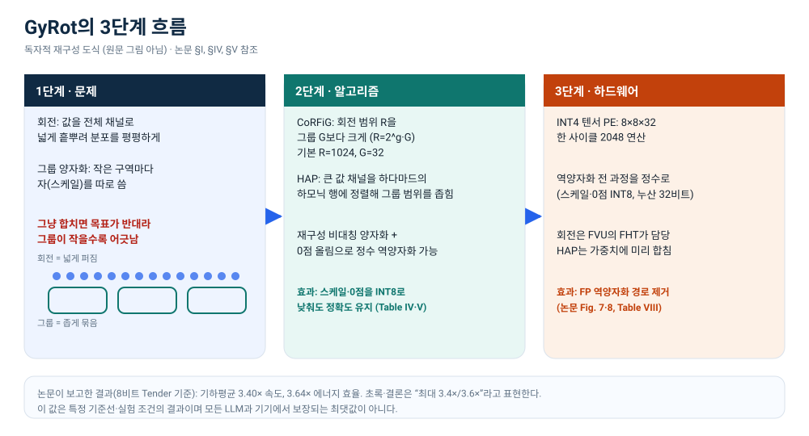
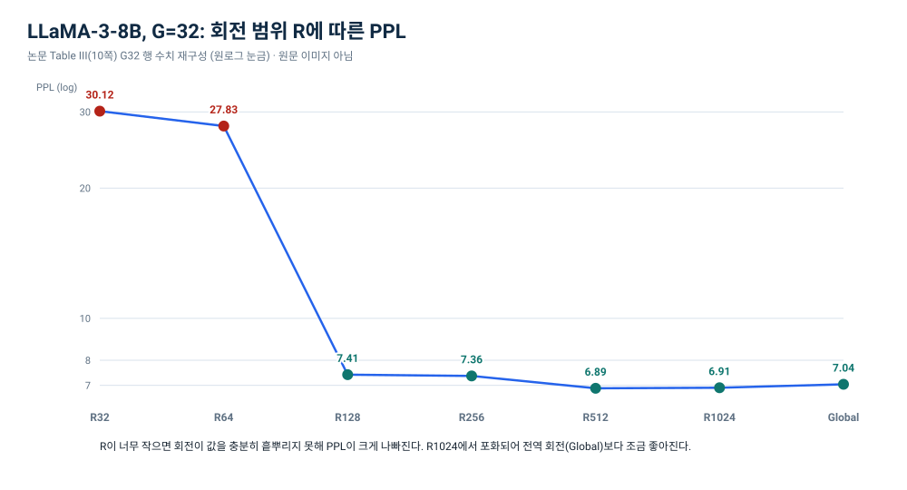
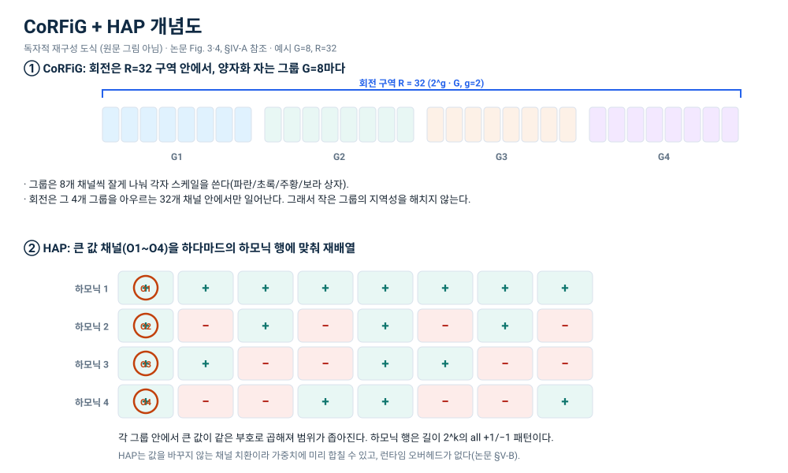
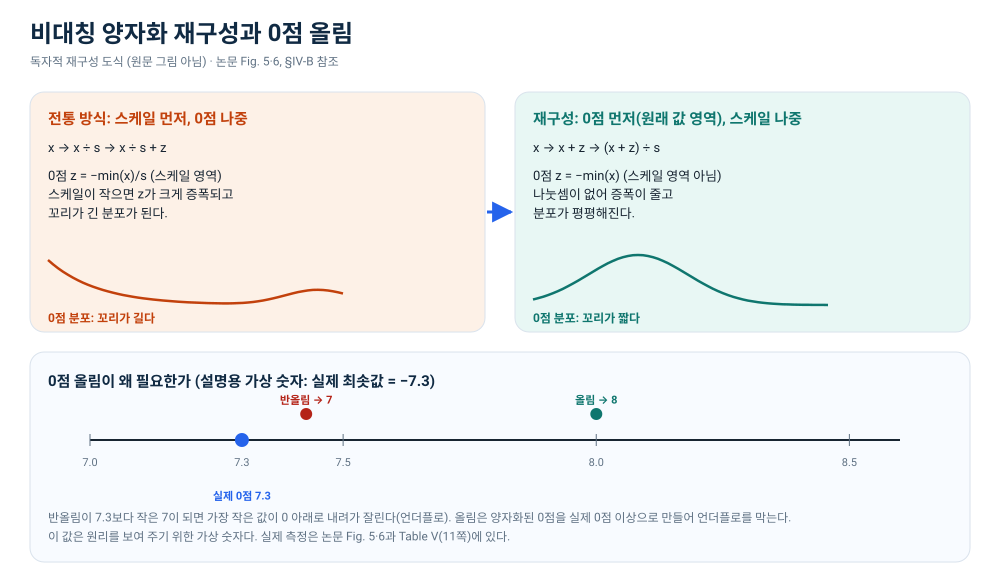
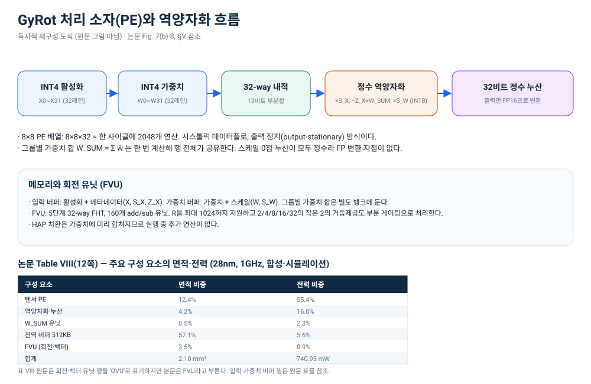
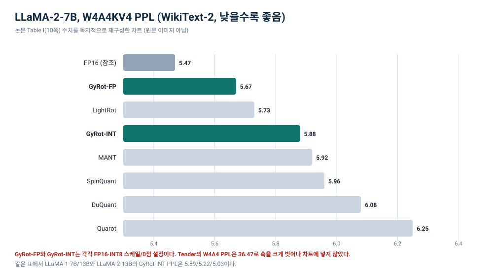
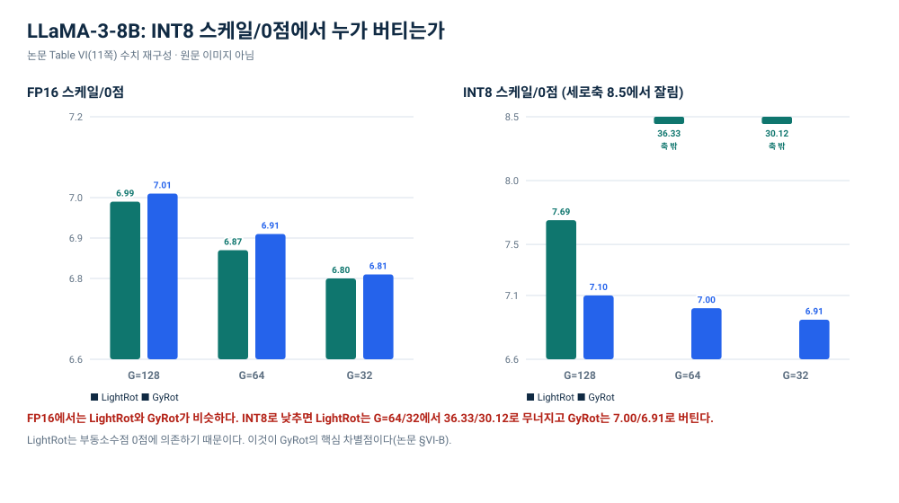

ELI5 · Low-bit LLM · HPCA 2026
GyRot: Leveraging Hidden Synergy between Rotation and Fine-grained Group Quantization for Low-bit LLM Inference
회전은 넓게, 양자화는 좁게 — 어긋나던 둘을 맞추는 방법
4비트 LLM 추론에서 회전과 그룹 양자화는 왜 함께 쓰기 어려울까요? GyRot가 그 충돌을 푸는 세 가지 장치를, 단체사진 비유와 원문 표·그림으로 따라갑니다.
한 줄 요약: 큰 언어 모델(LLM)의 숫자를 4비트로 줄이려면 두 가지 기술이 필요합니다. 회전은 큰 값을 여러 채널로 고르게 흩뿌리고, 그룹 양자화는 작은 구역마다 자기만의 자를 씁니다. 그런데 둘을 그냥 합치면 회전이 구역을 너무 넓게 흩어 놓아 자가 맞지 않습니다. GyRot는 회전 범위를 그룹보다 크게 잡고(CoRFiG), 큰 값들을 하다마드 행렬의 같은 부호 위치에 정렬하며(HAP), 0점 계산 순서를 바꿔 정수만으로 역양자화하는 방법을 제안합니다.
- 1. 문제회전은 넓게, 그룹 양자화는 좁게 — 목표가 반대라 그냥 합치면 정확도가 무너집니다.
- 2. 알고리즘CoRFiG로 회전 범위를 그룹보다 크게, HAP로 큰 값을 같은 부호 행에, 0점은 올림으로.
- 3. 하드웨어INT4 PE와 정수 역양자화로 FP 경로를 걷어 내고, 회전은 FHT 유닛이 맡습니다.
읽기 전에: 숫자와 그림의 출처
이 글은 2026년 7월 30일 arXiv에 올라온 v1과 HPCA 2026에 실린 15쪽 논문을 직접 읽고 정리했습니다. 확인 날짜는 2026년 10월 19일입니다. 원문 제목과 저자, DOI는 다음과 같습니다.
- 제목: GyRot: Leveraging Hidden Synergy between Rotation and Fine-grained Group Quantization for Low-bit LLM Inference
- 저자: Sangjin Kim, Yuseon Choi, Byeongcheol Kim, Jungjun Oh, Hoi-jun Yoo (KAIST)
- 학회: 2026 IEEE International Symposium on High-Performance Computer Architecture (HPCA), pp. 1–15
- DOI: 10.1109/HPCA68181.2026.11408453
- arXiv: 2607.27694v1
숫자는 세 종류로 나눠 읽어야 합니다. 첫째, 논문 수치는 표와 그림 번호, 페이지를 함께 적었습니다. 둘째, 설명용 가상 숫자는 양자화 계산을 따라가기 위해 이 글에서 만든 예시이며, 그렇게 표시했습니다. 셋째, 독립 재현은 하지 않았습니다. 이 글에는 이 환경에서 새로 측정한 성능이나 정확도가 없습니다.
그림은 원문을 복사하지 않았습니다. arXiv의 비독점 배포 라이선스는 arXiv에만 배포권을 주는 조건이라, 논문 그림을 웹페이지에 그대로 옮길 권리가 확실하지 않습니다. 그래서 이 글의 그림 7개는 모두 수치와 개념만 참고해 이 작업에서 새로 그린 독자적 재구성 도식입니다. 원문 그림의 모양·색·배치를 베끼지 않았고, 각 캡션에 원문 그림·표·페이지 링크를 붙였습니다. 표는 수치를 그대로 인용하되 원문 표 이미지를 재사용하지 않고 HTML로 다시 구성했습니다.
읽는 방법. 처음에는 회색 더 자세히 상자를 건너뛰고 본문과 그림만 따라오세요. 수식과 하드웨어 세부가 궁금하면 그 상자를 펼치면 됩니다. 모바일에서 넓은 그림이나 표가 잘려 보이면 해당 영역을 옆으로 밀거나, 캡션의 “원본 SVG 열기”를 누르세요.
이 글의 비유는 하나만 씁니다. “단체사진 줄 세우기”입니다. 회전은 사람들을 여러 줄에 고르게 섞는 일, 그룹 양자화는 줄마다 따로 재는 일, HAP는 키 큰 사람을 특정 줄의 같은 위치에 모으는 일에 해당합니다. 비유가 맞지 않는 지점은 비유의 한계에 따로 적었습니다.
1. 왜 4비트인가, 왜 어려운가
LLM 추론은 생각보다 “숫자를 얼마나 자주, 얼마나 많이 읽는가”의 문제입니다. 가중치는 모델 크기를 그대로 차지하고, 활성화는 토큰을 만들 때마다 새로 계산됩니다. 가중치를 16비트에서 4비트로 줄이면 같은 메모리에 4배 많은 값을 담을 수 있고, 메모리 대역폭과 에너지도 크게 줄일 수 있습니다. 그래서 4비트 이하로 내려가려는 연구가 계속 나옵니다.
문제는 LLM의 값 분포가 고르지 않다는 점입니다. 대부분의 값은 작은데, 유난히 큰 아웃라이어(outlier)가 섞여 있습니다. 4비트 정수는 표현할 수 있는 칸이 16개뿐입니다. 범위를 넓게 잡으면 칸 하나가 덮는 폭이 커져서 작은 값들이 뭉개지고, 범위를 좁게 잡으면 큰 값이 잘립니다. 아웃라이어 하나가 그룹 전체의 자를 망가뜨리는 셈입니다.
논문은 활성화·가중치·KV 캐시를 각각 4비트로 낮추는 W4A4KV4 설정을 목표로 합니다. 여기서 W는 가중치(Weight), A는 활성화(Activation), KV는 키·값 캐시입니다. “4비트”라고 해도 무엇을 4비트로 줄였는지에 따라 난이도가 완전히 달라집니다. 가중치만 4비트로 줄이는 것은 비교적 쉽지만, 활성화와 KV 캐시까지 4비트로 줄이면 아웃라이어 문제가 훨씬 거세집니다.
여기서 ‘자’는 스케일입니다. 양자화에서 스케일은 “정수 한 칸이 실제 값에서 얼마만큼의 폭을 뜻하는지” 알려 주는 자입니다. 0점은 “실제 값 0이 정수 몇 번 칸에 대응하는지”를 나타내는 기준점입니다. 둘 다 그룹마다 따로 둘 수 있습니다.
2. 두 도구: 회전과 그룹 양자화
2.1 회전: 값을 넓게 흩뿌리기
회전(rotation)은 값들을 서로 섞어서 분포를 평평하게 만드는 변환입니다. 정확히는 하다마드 행렬 같은 직교 변환을 곱합니다. 직교 변환은 벡터의 길이를 바꾸지 않으면서 방향만 돌리기 때문에, 큰 값 하나가 있던 자리의 에너지가 여러 채널로 고르게 퍼집니다. 아웃라이어가 한 채널에만 솟아 있으면 그 채널 때문에 그룹 전체의 범위가 넓어지는데, 회전을 하면 그 에너지가 나뉘어서 그룹별 범위가 줄어듭니다.
단체사진 비유. 키 큰 사람 한 명이 맨 앞줄 한가운데 서 있으면, 그 줄만 사진 프레임을 크게 잡아야 합니다. 회전은 “키 큰 사람을 여러 줄에 나눠 세우는” 일과 비슷합니다. 사람을 복제하는 게 아니라, 서로 위치를 바꾸고 섞어서 특정 줄에 큰 값이 몰리지 않게 하는 것입니다.
회전은 행렬 곱으로 표현되지만, 하다마드 행렬은 +1과 −1로만 이루어져 있어서 곱셈 없이 덧셈·뺄셈만으로 계산할 수 있습니다. 길이 n인 벡터를 회전하는 데 O(n log n)번의 덧셈·뺄셈이면 충분하고, 이 계산을 FHT(Fast Hadamard Transform)라고 부릅니다. GyRot의 하드웨어도 이 FHT를 씁니다.
더 자세히: 하다마드 회전이 왜 값을 퍼뜨리나
크기 2의 하다마드 행렬은 [[1, 1], [1, -1]]입니다. 이를 재귀적으로 확장하면 크기 4, 8, 16, …의 행렬이 만들어집니다. 각 행은 서로 직교하고, 모든 원소가 +1 또는 −1입니다. 벡터 x에 이 행렬을 곱하면 각 출력은 입력 원소들의 합 또는 차이가 됩니다. 그래서 한 원소에 있던 큰 값이 여러 출력에 나뉘어 나타납니다.
직교 변환이므로 벡터의 L2 노름은 그대로입니다. 즉 에너지를 새로 만들지 않고 위치만 바꿉니다. 역변환도 같은 행렬(전치)을 곱하면 되기 때문에, 양자화 후에도 원래 공간으로 되돌리기 쉽습니다. 논문은 회전을 “값을 바꾸지 않고 분포만 고르게 하는” 전처리로 씁니다.
2.2 그룹 양자화: 작은 구역마다 다른 자
그룹 양자화는 채널을 작은 그룹으로 나누고 그룹마다 스케일(자)과 필요하면 0점(기준점)을 따로 둡니다. 그룹이 작을수록 각 그룹의 값 범위에 더 잘 맞출 수 있어서 정확도가 올라갑니다. 최근 연구는 128~1024개였던 그룹을 16~64개까지 줄이는 추세입니다. 대신 그룹이 많아지면 스케일과 0점을 더 자주 읽고 적용해야 하므로 하드웨어 비용이 늘어납니다.
비대칭 양자화는 여기에 0점을 더합니다. 어떤 그룹의 값이 한쪽으로 치우쳐 있으면 0을 기준으로 양쪽을 똑같이 나누는 대칭 방식보다, 최솟값을 0에 맞추고 그만큼 이동시키는 비대칭 방식이 범위를 더 잘 씁니다. 대신 그룹마다 0점을 저장하고 계산해야 해서 비용이 붙습니다.
단체사진 비유, 두 번째. 그룹 양자화는 “줄마다 키를 재는 자를 따로 쓰는” 일입니다. 1반과 2반의 키 범위가 다르면 같은 자로 재는 것보다 반별로 자를 맞추는 편이 정확합니다. 그런데 자를 반마다 하나씩 준비하려면 자가 많이 필요하고, 사진을 찍을 때마다 어느 자를 쓸지 확인해야 합니다. 그룹을 잘게 나눌수록 정확하지만 관리 비용이 드는 이유입니다.
여기서 중요한 점은 회전과 그룹 양자화가 서로 다른 단위를 본다는 것입니다. 회전은 “전체 채널을 한꺼번에 섞는” 연산이고, 그룹 양자화는 “작은 구역 안에서만” 자를 잡습니다. 둘을 그냥 합치면 회전이 그룹의 경계를 넘어 값을 섞어 버립니다.
더 자세히: 양자화 식과 손계산 예시
그룹 g의 값 x를 b비트 비대칭 양자화한다고 합시다. 정수 칸은 0부터 \(2^b-1\)까지입니다. 전통적인 방식은 스케일을 먼저 적용하고 0점을 더합니다.
s = (max(x_g) − min(x_g)) / (2^b − 1)
z = round( −min(x_g) / s )
복원: x̂ = s × (q − z)
GyRot가 쓰는 재구성 방식은 순서를 뒤집습니다. 0점을 원래 값 영역에서 구하고, 값을 더한 뒤 스케일로 나눕니다.
z = ceil( −min(x_g) )
s = ( max(x_g) + z ) / (2^b − 1)
복원: x̂ = s × q − z
아래 손계산은 방향을 보여 주려고 내림으로 단순화한 가상 예시입니다. 논문의 식은 반올림 기호를 쓰고, 0점은 INT8 스케일로 표현합니다. 숫자 자체는 논문 측정값이 아닙니다.
예시 그룹: −7.3, −1.0, 0.8, 6.0 (4비트, 칸 0~15)
전통 방식: 범위는 6.0 − (−7.3) = 13.3, 스케일은 13.3 ÷ 15 = 0.8867입니다. 0점은 7.3 ÷ 0.8867 = 8.232를 내림한 8입니다. 최솟값을 양자화하면 −7.3 ÷ 0.8867 = −8.232, 여기에 8을 더하면 −0.232입니다. 내림하면 −1이지만 칸은 0부터 시작하므로 0으로 잘립니다. 가장 작은 값이 칸 아래로 떨어진 것입니다.
재구성 방식: 0점은 7.3을 올림한 8입니다. 스케일은 (6.0 + 8) ÷ 15 = 0.9333입니다. 최솟값은 (−7.3 + 8) ÷ 0.9333 = 0.75를 내림한 0, 최댓값은 (6.0 + 8) ÷ 0.9333 = 15입니다. 아무 값도 칸 아래로 잘리지 않습니다. 0점을 반올림해서 7로 잡았다면 최솟값이 다시 0 아래로 내려갔을 것입니다. 올림은 양자화된 0점을 실제 0점보다 크거나 같게 만들어 아래쪽 언더플로를 막습니다.
이 예시는 계산 순서와 올림의 효과를 보여 주기 위한 가상 숫자입니다. 실제 논문은 LLaMA 계열 모델의 층별 분포에서 이 효과를 측정했습니다.
3. 그냥 합치면 왜 안 되나
회전은 값을 전체 채널로 넓게 흩뿌립니다. 그룹 양자화는 작은 구역마다 자를 따로 잡습니다. 얼핏 보면 “회전으로 아웃라이어를 없앤 뒤 그룹 양자화로 정밀하게 자르면 되겠네” 싶습니다. 실제로 많은 연구가 이 조합을 시도했습니다. 하지만 회전이 강할수록 그룹의 지역성(locality)이 사라집니다.
예를 들어 32개 채널짜리 그룹이 있다고 합시다. 회전 전에는 이 그룹 안에 큰 값이 하나 있어서 그룹의 범위가 넓었습니다. 전역 회전을 하면 그 큰 값의 에너지가 32개 채널에 고르게 퍼집니다. 그룹의 범위는 줄어들지만, 이제 그룹마다 분포가 거의 비슷해져서 “이 그룹은 이렇게 자르고 저 그룹은 저렇게 자른다”는 이점이 줄어듭니다. 심지어 회전이 그룹 경계를 넘어가면, 그룹 안의 값들이 서로 다른 그룹의 값과 섞이면서 그룹별 통계가 흐트러집니다.
논문은 이 충돌을 전역 회전 vs 지역 스케일링이라고 부릅니다. 회전을 세게 하면 아웃라이어는 줄지만 그룹별 스케일의 의미가 약해지고, 회전을 약하게 하면 그룹별 스케일은 살아나지만 아웃라이어가 남습니다. 한쪽을 키우면 다른 쪽이 손해를 보는 구조입니다.
하드웨어 쪽 문제도 있습니다. 그룹이 작아지면 그룹 수가 늘어나고 역양자화 횟수도 늘어납니다. 논문의 Fig. 2(4쪽)는 INT 행렬 곱셈과 역양자화 유닛을 분리해 비용을 보여 줍니다. 그룹이 작아질수록 부동소수점 역양자화 경로의 비용이 가파르게 커지고, 비대칭 양자화를 쓰면 0점 처리 때문에 더 커집니다. 반면 INT8 스케일·0점을 쓰는 정수 역양자화 경로는 훨씬 작습니다. 이 관찰이 “정수만으로 역양자화하자”는 설계로 이어집니다.
여기까지의 핵심. 회전과 그룹 양자화는 각각은 좋은 도구지만, 회전의 단위(전체 채널)와 그룹의 단위(작은 구역)가 어긋납니다. GyRot는 이 어긋남을 “회전 범위를 그룹보다 크게” 잡는 것으로 풉니다. 다음 장에서 그 세 가지 장치를 봅니다.
4. GyRot의 3단계 해법
GyRot는 세 가지를 한 묶음으로 바꿉니다. 하나만 바꾸면 해결되지 않습니다. 회전 범위를 조정하고(CoRFiG), 큰 값의 위치를 정렬하고(HAP), 0점 계산 순서와 올림을 바꿉니다. 이 세 가지가 맞물려야 스케일과 0점을 INT8로 낮춰도 정확도가 유지됩니다.
- 1CoRFiG회전 범위 R을 그룹 G보다 크게 잡습니다. 기본값은 R=1024, G=32입니다. 회전은 전역이 아니라 R 안에서만 일어납니다.
- 2HAP큰 값 채널을 하다마드의 하모닉 행에 맞춰 재배열합니다. 그룹마다 큰 값이 같은 부호로 곱해지게 만듭니다.
- 3재구성 양자화0점을 원래 값 영역에서 먼저 구하고, 0점을 올림해서 아래쪽 언더플로를 막습니다. 역양자화는 정수로 끝냅니다.
모바일에서는 그림을 옆으로 밀어 크게 보세요. 캡션의 “원본 SVG 열기”로도 볼 수 있습니다.

4.1 CoRFiG: 회전 범위를 그룹보다 크게
CoRFiG(Coarse-Rotation Fine-Grouping)는 회전을 전체 채널에 적용하지 않고, R개 채널로 이루어진 구역 안에서만 적용합니다. 이때 R은 2의 거듭제곱이고, 그룹 크기 G와 R = 2^g · G 관계를 갖습니다. 논문의 기본 설정은 R = 1024, G = 32입니다. R이 G보다 크기 때문에 회전은 여러 그룹을 아우르며 아웃라이어를 충분히 흩뿌리고, 양자화는 여전히 32개 채널마다 촘촘하게 자를 잡습니다.
이게 왜 중요할까요? 전역 회전은 아웃라이어를 전체 채널로 퍼뜨려서 그룹별 차이를 지워 버립니다. 반대로 R을 G와 똑같이 잡으면 회전이 그룹 하나 안에 갇혀서 아웃라이어를 충분히 흩뿌리지 못합니다. CoRFiG는 그 중간을 택합니다. 아웃라이어의 영향은 R개 채널까지만 퍼지고, 그룹 G는 작게 유지됩니다. 논문은 이걸 거친 회전(coarse rotation)과 잘게 나눈 그룹화(fine grouping)의 분리라고 부릅니다.
R이 1024인 이유는 Table III과 Fig. 6에서 나옵니다. R을 32나 64로 잡으면 회전이 충분히 퍼지지 않아 PPL이 30.12, 27.83까지 치솟습니다. R=128이면 7.41로 떨어지고, R=1024에서 6.91로 포화됩니다. 전역 회전(Global)은 7.04로 오히려 조금 나쁩니다. “회전은 넓을수록 좋다”가 아니라 “그룹 구조를 해치지 않을 만큼 넓어야 한다”는 것이 CoRFiG의 요점입니다.
모바일에서는 그림을 옆으로 밀어 크게 보세요. 캡션의 “원본 SVG 열기”로도 볼 수 있습니다.

| 그룹 | R32 | R64 | R128 | R256 | R512 | R1024 | Global |
|---|---|---|---|---|---|---|---|
| G32 | 30.12 | 27.83 | 7.41 | 7.36 | 6.89 | 6.91 | 7.04 |
| G64 | — | 36.33 | 7.55 | 7.52 | 7.00 | 7.00 | 7.19 |
| G128 | — | — | 7.69 | 7.60 | 7.10 | 7.10 | 7.31 |
더 자세히: 왜 R = 2^g · G인가
하다마드 행렬은 크기가 2의 거듭제곱일 때 재귀적으로 만들 수 있고, FHT도 길이가 2의 거듭제곱일 때 효율적입니다. 그래서 R은 2의 거듭제곱이어야 합니다. 여기에 그룹 크기 G를 곱하는 이유는, R 안에 정확히 2^g개의 그룹이 들어가게 하기 위해서입니다. 예를 들어 G=32, R=1024면 2^g = 32, 즉 R 안에 32개의 그룹이 들어갑니다.
이 구조 덕분에 회전은 R개 채널 범위에서만 아웃라이어를 퍼뜨리고, 그룹 G는 그대로 유지됩니다. 논문은 R < N_ch(전체 채널 수)인 지역 회전을 쓰며, R을 너무 작게 잡으면 아웃라이어가 충분히 퍼지지 않고, 너무 크게 잡으면 그룹별 이점이 줄어든다고 설명합니다. 실험적 기본값이 R=1024, G=32입니다.
4.2 HAP: 큰 값을 하모닉 행에 정렬
CoRFiG만으로는 부족합니다. 회전 후에도 각 그룹의 범위가 넓으면 스케일을 정밀하게 표현해야 합니다. HAP(Harmonic-Aligned Permutation)는 하다마드 행렬의 하모닉 행을 이용합니다. 하다마드 행렬은 재귀적으로 만들어지기 때문에 길이 2^k의 모든 +1 또는 모든 −1로 이루어진 행이 규칙적인 간격으로 반복됩니다. 논문은 G = 8, R = 32를 예로 들어 네 개의 거친 하모닉 행(G, 2G, 3G, 4G번째 행)이 있다고 설명합니다.
HAP는 회전 전에 전역에서 고른 큰 값 채널(O₁~O₄)을 이 하모닉 행에 맞춰 재배열합니다. 그러면 각 큰 값이 자기 그룹 안에서 일관된 부호로 곱해집니다. 정렬하지 않으면 큰 값이 +1과 −1에 무작위로 섞이지만, 정렬하면 그룹별 분포가 좁고 일정한 방향으로 치우칩니다. 논문의 Fig. 4(5쪽)는 이 효과를 보여 줍니다. 그룹별 범위가 줄어들면 양자화 오차가 줄고 스케일의 정밀도 요구도 낮아집니다.
중요한 점은 HAP가 값을 바꾸지 않는 채널 치환이라는 것입니다. 큰 값 채널의 위치만 바꾸므로, 가중치에 미리 합쳐 둘 수 있고 실행 중에 추가 연산이 들지 않습니다. “공짜로 정렬하는” 셈입니다.
모바일에서는 그림을 옆으로 밀어 크게 보세요. 캡션의 “원본 SVG 열기”로도 볼 수 있습니다.

효과는 Table IV(11쪽)에서 극적으로 나타납니다. LLaMA-3-8B, G = 32에서 그룹 양자화만 쓰면 스케일을 INT8로 줄였을 때 PPL이 416.15까지 폭발합니다. CoRFiG를 더하면 364.17로 여전히 나쁘고, CoRFiG+HAP를 쓰면 6.80으로 떨어집니다. FP16 스케일일 때의 6.80과 사실상 같습니다. HAP가 스케일 정밀도 요구를 크게 낮춘 것입니다.
더 자세히: 표 4·5 전체 수치
| 설정 | FP16 SF | FP8 SF | INT8 SF |
|---|---|---|---|
| 그룹 양자화만 | 7.40 | 13.38 | 416.15 |
| + CoRFiG | 6.91 | 7.03 | 364.17 |
| + CoRFiG + HAP | 6.80 | 6.84 | 6.80 |
| 설정 | 비대칭 방식 | ZP 양자화 | FP16 ZP | FP8 ZP | INT8 ZP |
|---|---|---|---|---|---|
| 그룹 양자화만 | — | — | 7.21 | 19.37 | 7.21 |
| CoRFiG | 전통 | 반올림 | 6.96 | 6.97 | 6.96 |
| CoRFiG + HAP | 전통 | 반올림 | 6.81 | 6.91 | 7.93 |
| CoRFiG + HAP | 재구성 | 반올림 | 6.80 | 6.83 | 7.65 |
| CoRFiG + HAP | 재구성 | 올림 | 6.81 | 6.83 | 6.91 |
4.3 비대칭 양자화 재구성과 0점 올림
HAP를 쓰면 그룹별 분포가 좁아지는 대신 한쪽으로 치우친 비대칭이 강해집니다. 이때 전통적인 비대칭 양자화는 0점이 아주 긴 꼬리를 갖게 됩니다. 전통 방식은 스케일을 먼저 적용하고 0점을 더하는데, 스케일이 작아지면 0점 값이 크게 증폭되기 때문입니다.
GyRot는 순서를 뒤집습니다. 0점을 스케일을 적용하기 전의 원래 값 영역에서 구하고, 값을 더한 뒤에 스케일로 나눕니다. 그러면 0점을 구할 때 나눗셈이 필요 없고, 작은 스케일 때문에 0점이 증폭되는 문제도 줄어듭니다. 논문의 Fig. 5(6쪽)는 LLaMA-3-8B의 여덟 개 층(QKV와 FFN 포함)에서 정규화한 0점 분포를 비교합니다. 전통 방식은 상자 폭이 좁고 꼬리가 긴 반면, 재구성 방식은 상자 폭이 넓고 꼬리가 짧습니다.
여기에 0점 올림이 더해집니다. 0점 자체를 양자화할 때 반올림을 쓰면 실제 0점보다 작은 값으로 내려갈 수 있습니다. 그러면 가장 작은 값이 0 아래로 내려가 잘립니다. GyRot는 반올림 대신 올림을 써서 양자화된 0점이 실제 0점보다 크거나 같게 만듭니다. 이렇게 하면 아래쪽 언더플로가 원천적으로 막힙니다. Table V(11쪽)는 이 차이를 보여 줍니다. CoRFiG+HAP에 전통적인 반올림을 쓰면 INT8 0점에서 PPL이 7.93까지 나빠지지만, 재구성+올림을 쓰면 6.91로 FP16의 6.81에 가까워집니다.
모바일에서는 그림을 옆으로 밀어 크게 보세요. 캡션의 “원본 SVG 열기”로도 볼 수 있습니다.

더 자세히: 정수 역양자화는 어떻게 FP를 없애나
논문의 최종 양자화 식은 다음과 같습니다. 그룹 g의 값 x에 대해,
z = ceil( −min(x_g) )
s = ( max(x_g) + z ) / (2^b − 1)
역양자화는 스케일과 0점을 “역순”으로 적용합니다. q에서 원래 값을 복원하면 x = s·q − z입니다. 행렬 곱셈에서는 이 식을 그대로 쓰지 않고, 그룹별 가중치 합 W_SUM = Σ ŵ_i를 미리 계산해 두고 다음과 같이 정리합니다.
여기서 Σ x̂_i·ŵ_i는 INT4끼리의 정수 내적입니다. \(W_{SUM}\)도 정수이고, 스케일과 0점은 INT8입니다. 그래서 곱셈과 뺄셈을 모두 정수로 처리한 뒤, 마지막에만 FP16으로 바꿀 수 있습니다. 논문의 Fig. 7(b)와 Table VIII이 이 경로를 보여 줍니다.
위 손계산 예시는 0점을 정수로 반올림/올림하는 상황을 단순화한 것입니다. 논문의 실제 0점은 INT8 스케일로 표현되며, 올림은 그 양자화된 0점이 실제 0점보다 작아지지 않게 하는 역할을 합니다.
4장 요약. CoRFiG는 “회전을 그룹보다 넓게, 하지만 전역은 아니게” 만듭니다. HAP는 “큰 값을 같은 부호 행에” 모읍니다. 재구성 양자화와 올림은 “0점을 원래 값 영역에서 구하고, 아래로 내려가지 않게” 합니다. 세 장치가 함께 있어야 스케일·0점을 INT8로 낮출 수 있습니다.
5. 하드웨어: 정수만으로 역양자화하기
GyRot의 처리 소자(PE)는 한 사이클에 4비트 입력 32개와 4비트 가중치 32개의 내적을 계산합니다. 8×8 배열이면 8×8×32 = 2048개의 연산을 동시에 합니다. 내적 결과는 13비트 부분합이고, 여기에 활성화 스케일을 곱합니다. 이어서 0점과 미리 계산한 그룹별 가중치 합을 곱해 빼고, 마지막으로 가중치 스케일을 곱합니다. 스케일과 0점은 모두 INT8이고 누산기는 32비트 정수입니다. 최종 출력만 FP16으로 바꿉니다. 그룹별 가중치 합은 한 번 계산해 행 전체가 공유합니다.
왜 전용 하드웨어가 필요할까요? GPU의 텐서 코어는 INT4 행렬 곱셈을 잘하지만, 그룹별 스케일과 0점을 적용하는 역양자화는 보통 CUDA 코어에서 부동소수점으로 처리합니다. 정수 행렬 곱셈 결과를 부동소수점으로 바꿨다가 다시 계산하는 과정이 지연과 에너지를 먹습니다. GyRot는 이 변환을 PE 안에서 없애고 모든 역양자화를 정수로 끝냅니다.
모바일에서는 그림을 옆으로 밀어 크게 보세요. 캡션의 “원본 SVG 열기”로도 볼 수 있습니다.

| 구성 요소 | 구성 | 면적 mm² (%) | 전력 mW (%) |
|---|---|---|---|
| PE Array (INT Tensor) | 8×8×32 | 0.26 (12.4%) | 410.24 (55.4%) |
| PE Array (Dequant. + Accum.) | 8×8 | 0.09 (4.2%) | 118.40 (16.0%) |
| W_SUM unit | 8×32-way Adder-Tree | 0.01 (0.5%) | 17.09 (2.3%) |
| Input Buf. | 64KB + 8KB (SF/ZP) | 0.24 (11.4%) | 82.43 (11.1%) |
| Weight Buf. | 64KB + 4KB (SF) | 0.23 (10.8%) | 64.38 (8.7%) |
| Global Buf. | 512KB | 1.20 (57.1%) | 41.63 (5.6%) |
| OVU (본문은 FVU) | 32-way + FHT unit | 0.07 (3.5%) | 6.78 (0.9%) |
| 합계 | — | 2.10 (100.0%) | 740.95 (100.0%) |
Table VIII을 보면 전체 면적 2.10mm², 전력 740.95mW 중 텐서 PE가 면적의 12.4%, 전력의 55.4%를 차지합니다. 역양자화·누산 로직은 면적 4.2%, 전력 16.0%입니다. FVU는 면적 3.5%, 전력 0.9%로 작습니다. 면적의 절반 이상은 512KB 전역 버퍼가 차지하지만, 전력 비중은 5.6%입니다. 계산을 많이 하는 텐서 PE가 전력의 절반 이상을 쓰는 구조입니다.
PE 수준에서 논문은 Tender 대비 GyRot-FP가 면적 45.6%, 에너지 51.0%를 줄였다고 보고합니다. GyRot-INT는 면적 65.2%, 에너지 69.2%를 줄입니다. 이 수치는 PE 수준 비교이며, 시스템 전체 수치와는 다릅니다.
더 자세히: 13비트 부분합과 32비트 누산
INT4 값의 범위는 −8~7입니다. 두 값을 곱하면 최대 64(−8×−8)이고, 32개를 더해도 2048입니다. 13비트 정수 범위(−4096~4095)면 32-way 내적 결과를 담기에 충분합니다. 여기에 스케일과 0점을 곱하고 빼는 과정을 거친 뒤, 여러 그룹·여러 타일의 결과를 32비트 정수 누산기에 쌓습니다. 논문은 이 비트 폭을 명시하고, 최종 출력만 FP16으로 변환합니다.
FVU는 5단계 32-way FHT로 구성되고 160개의 덧셈·뺄셈 유닛을 씁니다. 로컬 레지스터 파일과 2단계 방식을 써서 R을 최대 1024까지 지원하고, 2/4/8/16/32 같은 작은 2의 거듭제곱은 레인을 부분적으로 켜서 에너지를 아낍니다. HAP 치환은 가중치에 미리 합쳐지므로 런타임 오버헤드가 없습니다.
중요: 이 절의 면적·전력·속도는 모두 RTL 합성과 시뮬레이션에서 나온 추정치입니다. 실제 칩을 제작해 측정한 실리콘 결과가 아닙니다. 논문도 28nm 공정, 1GHz, iso-compute-area 조건을 명시합니다. “3.4배” 같은 시스템 수치를 읽을 때는 이 조건을 함께 봐야 합니다.
6. 결과: 정확도·속도·에너지
실험 조건. 정확도는 LLaMA-1-7B/13B, LLaMA-2-7B/13B, LLaMA-3-8B에서 평가했습니다. PPL은 WikiText-2, 제로샷 정확도는 PIQA·ARC-e·ARC-c·BoolQ·HellaSwag·WinoGrande를 LM-Evaluation-Harness로 측정했습니다. 대화 품질은 LLaMA-3-8B-Instruct의 MT-Bench 160턴을 LLM-as-a-Judge로 평가했습니다. 모든 회전 기반 기준선은 동적·비대칭 per-token 활성화 양자화를 쓰고, KV 캐시는 그룹 128의 비대칭 양자화, 가중치는 회전 후 GPTQ로 대칭 양자화합니다. GyRot는 활성화·가중치 그룹 32, KV 그룹 128을 씁니다.
6.1 PPL: 4비트에서 얼마나 버티나
Table I(10쪽)은 WikiText-2에서 측정한 PPL입니다. 낮을수록 좋습니다. LLaMA-2-7B를 기준으로 FP16은 5.47입니다. 4비트(W4A4KV4)에서 Quarot은 6.25, SpinQuant는 5.96, DuQuant는 6.08, MANT는 5.92, LightRot는 5.73입니다. GyRot-FP는 5.67, GyRot-INT는 5.88입니다. GyRot-FP는 LightRot보다 조금 좋고, GyRot-INT는 LightRot보다 조금 나쁩니다. 대신 GyRot-INT는 스케일과 0점을 모두 INT8로 낮춘 상태입니다. Tender의 W4A4는 36.47로 크게 무너지는데, 이는 Tender가 그룹 양자화 없이 텐서 단위로 처리하기 때문입니다.
모바일에서는 그림을 옆으로 밀어 크게 보세요. 캡션의 “원본 SVG 열기”로도 볼 수 있습니다.

| 방법 | W-A-KV 설정 | LLaMA-1-7B | LLaMA-1-13B | LLaMA-2-7B | LLaMA-2-13B |
|---|---|---|---|---|---|
| FP16 | 16-16-16 | 5.68 | 5.09 | 5.47 | 4.88 |
| Tender-W4A4 | 4-Tensor / 4-Token / 16 | 23.85 | 13.68 | 36.47 | 55.08 |
| Quarot | 4-Ch / 4-Tok / 4-G128 | 6.37 | 5.59 | 6.25 | 5.49 |
| SpinQuant | 4-Ch / 4-Tok / 4-G128 | 6.12 | 5.39 | 5.96 | 5.74 |
| DuQuant | 4-Ch / 4-Tok / 4-G128 | 6.18 | 5.47 | 6.08 | 5.33 |
| MANT-W4A4 | 4-G64 / 4-G64 / 16 | 6.09 | 5.38 | 5.92 | 5.24 |
| LightRot | 4-G128 / 4-G128 / 4-G128 | 5.95 | 5.27 | 5.73 | 5.08 |
| GyRot-FP | 4-G32 / 4-G32 / 4-G128 | 5.86 | 5.22 | 5.67 | 5.03 |
| GyRot-INT | 4-G32 / 4-G32 / 4-G128, SF/ZP INT8 | 5.89 | 5.22 | 5.88 | 5.03 |
LLaMA-1-7B/13B와 LLaMA-2-13B에서도 GyRot-INT는 5.89/5.22/5.03으로, FP16의 5.68/5.09/4.88과 비교해 0.13~0.21 정도 차이입니다. GyRot-FP는 5.86/5.22/5.03으로 더 가깝습니다. LLaMA-2-7B만 보면 GyRot-INT의 차이가 0.41로 조금 더 큽니다. 논문은 이 차이를 숨기지 않고 그대로 보고합니다. “모든 모델에서 FP16과 똑같다”가 아니라 “4비트·INT8 스케일/0점 조건에서 경쟁력이 있다”가 정확한 읽기입니다.
6.2 제로샷 정확도: 평균은 좋지만, 개별 과제는 다르다
Table II(10쪽)는 6개 제로샷 과제의 평균입니다. LLaMA-3-8B에서 FP16은 74.19, GyRot-INT는 72.98로 1.21%p 차이입니다. 논문은 이를 “1.2%”라고 표현합니다. 같은 모델에서 Quarot은 66.96으로 FP16보다 7.23%p 낮고, SpinQuant는 69.90, LightRot는 72.43입니다. GyRot-INT는 LightRot보다 0.55%p 높습니다.
LLaMA-2-7B에서는 FP16 70.52, GyRot-INT 69.55, LightRot 68.71, SpinQuant 67.02, Quarot 65.90입니다. LLaMA-2-13B에서는 FP16 73.20, GyRot-INT 72.38, LightRot 71.83, SpinQuant 69.86, Quarot 69.79입니다. 세 모델 모두 GyRot-INT의 평균이 Quarot·SpinQuant·LightRot보다 높습니다.
다만 평균이 전부는 아닙니다. LLaMA-2-7B의 PIQA에서는 LightRot가 78.18로 GyRot-INT의 77.69보다 높습니다. LLaMA-3-8B의 PIQA에서도 LightRot가 80.25로 GyRot의 79.65보다 높습니다. “평균 우위”와 “모든 과제 우위”는 다르며, 논문도 표에 개별 값을 그대로 공개합니다.
더 자세히: 표 2 전체 제로샷 정확도
| 모델 | 방법 | PIQA | ARC-e | ARC-c | BoolQ | HellaS. | WinoG. | 평균 |
|---|---|---|---|---|---|---|---|---|
| LLaMA-2-7B | FP16 | 79.16 | 74.33 | 46.42 | 77.71 | 75.94 | 69.53 | 70.52 |
| Quarot | 76.50 | 69.32 | 41.30 | 72.66 | 72.09 | 63.54 | 65.90 | |
| SpinQuant | 76.88 | 71.08 | 40.44 | 74.40 | 73.51 | 65.82 | 67.02 | |
| LightRot | 78.18 | 72.73 | 43.69 | 75.60 | 74.35 | 67.72 | 68.71 | |
| GyRot-INT | 77.69 | 74.28 | 44.54 | 77.19 | 74.65 | 68.98 | 69.55 | |
| LLaMA-2-13B | FP16 | 80.63 | 77.53 | 49.15 | 80.58 | 79.39 | 71.90 | 73.20 |
| Quarot | 78.84 | 73.32 | 44.37 | 77.58 | 75.73 | 68.90 | 69.79 | |
| SpinQuant | 78.29 | 74.49 | 46.67 | 76.76 | 75.22 | 67.72 | 69.86 | |
| LightRot | 79.33 | 76.47 | 48.72 | 77.68 | 77.84 | 70.96 | 71.83 | |
| GyRot-INT | 79.33 | 76.22 | 48.21 | 80.52 | 78.15 | 71.82 | 72.38 | |
| LLaMA-3-8B | FP16 | 80.63 | 77.74 | 53.50 | 81.10 | 79.18 | 73.01 | 74.19 |
| Quarot | 76.06 | 70.58 | 43.17 | 72.66 | 72.53 | 66.77 | 66.96 | |
| SpinQuant | 79.16 | 73.57 | 46.33 | 76.15 | 75.43 | 68.75 | 69.90 | |
| LightRot | 80.25 | 78.49 | 49.40 | 79.66 | 76.67 | 70.09 | 72.43 | |
| GyRot-INT | 79.65 | 78.16 | 51.45 | 80.67 | 77.40 | 70.56 | 72.98 |
6.3 MT-Bench: 대화 품질은 상대 승률로
MT-Bench는 LLaMA-3-8B-Instruct의 160턴 대화를 LLM 심판이 비교하는 평가입니다. 논문은 동점을 0.5승으로 처리한 조정 승률(adjusted win rate)을 보고합니다. GyRot-INT는 Quarot 대비 66.6%, SpinQuant 대비 68.8%, LightRot 대비 54.7% 우세합니다. 이 숫자는 “절대 점수”가 아니라 특정 상대와의 비교 승률입니다. 상대가 바뀌면 숫자의 의미도 바뀝니다.
LightRot 대비 54.7%는 “거의 비겼다”에 가깝습니다. GyRot가 대화 품질에서 LightRot를 압도한다기보다, 스케일·0점을 INT8로 낮춘 상태에서도 대등한 수준을 유지한다고 읽는 편이 정확합니다.
6.4 설계 요소별 기여: HAP가 만든 22.8%p
Fig. 9(b)(9쪽)는 각 설계 요소가 얼마나 기여했는지 보여 줍니다. 전역 회전만 쓸 때 승률은 33.1%입니다. CoRFiG를 더하면 3.1%p 오르고, 스케일을 INT8로 줄이면 17.8%p 떨어집니다. 여기에 HAP를 더하면 22.8%p 회복됩니다. 0점을 INT8로 줄이면 6.9%p 떨어지지만, 재구성과 올림을 적용하면 최종 37.2%가 됩니다.
이 수치들은 요소를 하나씩 더해 가며 측정한 누적 결과입니다. 각 요소를 독립적으로 분리한 실험은 아닙니다. “HAP만의 효과가 정확히 22.8%p”라고 단정하기보다, “전역 회전 + CoRFiG + INT8 스케일 상태에서 HAP를 더했을 때 22.8%p 회복됐다”로 읽어야 합니다.
6.5 속도와 에너지: 3.4배는 어디서 나온 숫자인가
논문 초록과 결론은 “최대 3.4배 속도 향상, 3.6배 에너지 효율”이라고 적습니다. 본문 VI-C(12쪽)의 실제 비교는 8비트 Tender 기준선 대비 기하평균 3.40배 속도, 3.64배 에너지 효율입니다. LLaMA 모델 전반의 평균이지, 모든 LLM과 모든 기기에서 보장되는 최댓값이 아닙니다. 논문 서론은 MANT·LightRot·Tender를 함께 비교한 범위로 1.42–3.40배 속도, 1.20–3.64배 에너지 절감을 제시합니다. 기준선에 따라 폭이 달라진다는 뜻입니다.
MANT와 LightRot 대비로는 평균적으로 속도가 41.7~67.5% 높고, 에너지 효율이 19.8~31.4% 좋다고 보고합니다. 이 수치들은 WikiText-2에서 LLaMA 모델을 돌린 시뮬레이션, iso-compute-area 조건, 28nm·1GHz 합성 결과입니다. 실제 GPU 서버에서 같은 배수가 나온다는 뜻이 아닙니다.
“최대”와 “기하평균”을 구분하세요. 3.40배/3.64배는 8비트 Tender 대비 기하평균이고, 1.42–3.40배/1.20–3.64배는 여러 기준선을 포함한 범위입니다. 어느 쪽도 “모든 상황에서 3.4배”를 보장하지 않습니다. 특히 4비트 기준선과 비교하면 배수는 더 작아집니다.
6.6 더 낮은 비트: W3A4에서도 버티나
논문은 3비트 가중치(W3A4)도 실험합니다. Table VII(11쪽)에서 GyRot-FP는 LLaMA-1-7B/13B, LLaMA-2-7B/13B, LLaMA-3-8B에서 6.20/5.48/6.16/5.48/7.73입니다. LightRot는 6.30/5.54/6.16/5.44/8.00, Quarot은 6.67/5.82/6.91/5.89/9.17입니다. GyRot-FP는 LightRot와 비슷하고 Quarot보다는 일관되게 좋습니다. GyRot-INT는 6.22/5.49/6.64/5.50/7.83으로, LLaMA-3-8B에서는 LightRot의 8.00보다 좋습니다.
다만 W3A4는 W4A4보다 훨씬 어려운 조건입니다. PPL이 FP16보다 여전히 높고, 모델에 따라 편차가 있습니다. “3비트에서도 완벽하다”가 아니라 “3비트에서도 경쟁력이 있다”로 읽어야 합니다.
더 자세히: 표 7 전체 W3A4 수치
| 방법 | LLaMA-1-7B | LLaMA-1-13B | LLaMA-2-7B | LLaMA-2-13B | LLaMA-3-8B |
|---|---|---|---|---|---|
| Quarot | 6.67 | 5.82 | 6.91 | 5.89 | 9.17 |
| LightRot | 6.30 | 5.54 | 6.16 | 5.44 | 8.00 |
| GyRot-FP | 6.20 | 5.48 | 6.16 | 5.48 | 7.73 |
| GyRot-INT | 6.22 | 5.49 | 6.64 | 5.50 | 7.83 |
7. 선행 연구와의 차이
Quarot과 SpinQuant는 전역 회전을 씁니다. DuQuant는 두 단계 회전과 전역 재배치를 씁니다. MANT는 복소수 형식의 텐서 포맷을 씁니다. LightRot는 회전 범위와 그룹 크기를 같게 두고(R = G = 128), 큰 값 채널을 하다마드의 all-ones 행에 맞춥니다.
GyRot는 여기서 두 가지를 더합니다. 먼저 회전 범위 R과 그룹 크기 G를 분리합니다(R = 2^g · G). 다음으로 하나의 all-ones 행이 아니라 여러 하모닉 행을 씁니다. 그 결과 스케일과 0점을 INT8로 낮춰도 정확도가 덜 무너집니다. 여기에 재구성 비대칭 양자화와 0점 올림, 완전 정수 역양자화가 더해집니다.
Table VI(11쪽)는 이 차이를 잘 보여 줍니다. LLaMA-3-8B에서 LightRot는 FP16 스케일·0점일 때 G = 128/64/32에서 6.99/6.87/6.80으로 GyRot의 7.01/6.91/6.81과 비슷합니다. 그런데 INT8로 낮추면 LightRot는 7.69/36.33/30.12로 무너지고, GyRot는 7.10/7.00/6.91로 버팁니다. LightRot가 부동소수점 0점에 의존하기 때문입니다. 이 표가 GyRot의 핵심 차별점을 가장 압축적으로 보여 줍니다.
| 방법 | SF/ZP | Per-Ch. | G128 | G64 | G32 |
|---|---|---|---|---|---|
| Quarot | FP16 | 8.16 | 7.31 | 7.19 | 7.04 |
| DuQuant | FP16 | 8.06 | 8.02 | 8.03 | 7.98 |
| LightRot | FP16 | — | 6.99 | 6.87 | 6.80 |
| GyRot | FP16 | — | 7.01 | 6.91 | 6.81 |
| LightRot | INT8 | — | 7.69 | 36.33 | 30.12 |
| GyRot | INT8 | — | 7.10 | 7.00 | 6.91 |
모바일에서는 그림을 옆으로 밀어 크게 보세요. 캡션의 “원본 SVG 열기”로도 볼 수 있습니다.

차별점 한 줄. LightRot는 “회전 범위 = 그룹 크기, all-ones 행 하나”에 기대지만, GyRot는 “회전 범위 > 그룹 크기, 여러 하모닉 행, 정수 0점”으로 그 의존을 걷어 냅니다. 그래서 INT8 스케일·0점에서 차이가 벌어집니다.
8. 한계와 주의할 점
- 독립 재현은 하지 않았습니다. 이 글의 모든 성능·정확도 수치는 논문 저자가 보고한 값입니다. 이 환경에서 모델을 다시 돌리거나 RTL을 합성하지 않았습니다. “재현했다”는 표현은 이 글 어디에도 없습니다.
- 시뮬레이션·합성 결과입니다. 면적·전력·속도는 28nm, 1GHz, iso-compute-area, RTL 시뮬레이션 조건입니다. 실제 칩 측정값이 아니며, 다른 공정·클럭·메모리 시스템에서는 달라질 수 있습니다.
- FP16과 완전히 같지는 않습니다. LLaMA-2-7B의 GyRot-INT PPL은 5.88로 FP16 5.47보다 0.41 높습니다. LLaMA-3-8B 제로샷 평균도 1.21%p 낮습니다. “4비트에서 FP16 수준”은 특정 표·조건에서의 근사치입니다.
- “최대 3.4배”는 보편 값이 아닙니다. 8비트 Tender 대비 기하평균 3.40배/3.64배이고, 기준선을 바꾸면 1.42–3.40배/1.20–3.64배 범위로 달라집니다. 4비트 기준선과 비교하면 배수는 더 작습니다.
- MT-Bench는 상대 승률입니다. LLM 심판과 160턴 샘플에 의존하며, 절대 품질 점수가 아닙니다. LightRot 대비 54.7%는 “대등하다”에 가깝습니다.
- W3A4는 여전히 어렵습니다. 3비트 가중치에서는 PPL이 FP16보다 높고 모델별 편차가 있습니다. GyRot가 3비트를 “해결했다”기보다 “경쟁력 있게 만든다”로 읽어야 합니다.
- 그림은 재구성입니다. 원문 그림을 복사하지 않았습니다. 수치와 개념은 원문을 따랐지만, 시각적 표현은 이 글의 것이므로 원문 그림과 픽셀 단위로 비교하면 안 됩니다. 표는 수치를 그대로 인용했습니다.
- 전용 하드웨어가 필요합니다. 알고리즘만으로 3.4배가 나오는 것이 아니라, 정수 역양자화 PE와 FVU를 갖춘 가속기 설계가 함께 있어야 합니다. 기존 GPU에 그대로 적용했을 때의 이득은 이 논문이 측정하지 않았습니다.
비유의 한계
“단체사진 줄 세우기” 비유는 회전이 값을 넓게 섞고, 그룹 양자화가 좁게 묶는다는 방향을 설명하는 데는 유용합니다. 하지만 실제 수학과 다른 점이 있습니다.
- 회전은 사람을 옮기는 것이 아니라 직교 변환입니다. 값의 에너지를 보존하면서 채널 간에 선형 결합합니다. “사람을 복제하거나 새로 만든다”는 이미지는 틀립니다.
- HAP는 회전이 아니라 채널 순서를 바꾸는 치환(permutation)입니다. 사람을 다른 줄로 보내는 것이 아니라, 이름표의 위치를 바꿔 회전 결과가 원하는 부호 패턴을 타게 합니다.
- 그룹은 사람 수가 아니라 채널 묶음입니다. 그룹 크기 G는 “한 줄에 몇 명”이 아니라 “몇 개 채널마다 스케일을 따로 두는가”입니다.
- 사진 프레임을 줄이는 비유는 양자화 오차를 “잘림”으로만 설명하지만, 실제로는 반올림 오차·스케일 오차·0점 오차가 함께 작용합니다.
9. 3단계 한 번 더
- 1문제를 인정한다회전은 넓게, 그룹 양자화는 좁게. 목표가 반대라서 그냥 합치면 그룹의 지역성이 사라집니다.
- 2알고리즘에서 맞춘다CoRFiG로 회전 범위를 그룹보다 크게 잡고, HAP로 큰 값을 하모닉 행에 정렬하고, 비대칭 양자화의 순서를 바꾸고 0점을 올림합니다. 이 세 가지가 스케일·0점의 정밀도 요구를 낮춥니다.
- 3하드웨어에서 끝낸다INT4 텐서 PE 안에서 스케일과 0점을 모두 정수로 처리하고, 32비트 정수 누산 후 FP16으로 출력합니다. 회전은 FVU의 FHT가 맡고, HAP는 가중치에 미리 합칩니다.
하나만 기억한다면. “회전을 줄이거나 그룹을 키우는” 대신, 회전의 범위와 그룹의 크기를 분리해서 맞춘다는 것. 이것이 GyRot의 한 줄 아이디어입니다.
10. 용어 사전
| 용어 | 쉬운 설명 |
|---|---|
| 양자화(quantization) | 넓은 범위의 실수를 좁은 범위의 정수로 바꾸는 일. 4비트면 16칸입니다. |
| 스케일(scale) | 정수 한 칸이 실제 값에서 얼마만큼의 폭을 뜻하는지 알려 주는 자. |
| 0점(zero-point) | 비대칭 양자화에서 실제 값 0이 정수 몇 번 칸에 대응하는지 나타내는 기준점. |
| 회전(rotation) | 하다마드 행렬 같은 직교 행렬을 곱해 값의 방향을 섞는 연산. 값을 없애지 않고 분포를 평평하게 만듭니다. |
| 그룹 양자화 | 채널을 작은 묶음으로 나누고 묶음마다 스케일을 따로 쓰는 방식. |
| CoRFiG | 회전 범위 R을 그룹 크기 G보다 크게 잡는 GyRot의 방식. R = 2^g · G. |
| HAP | 큰 값 채널을 하다마드 행렬의 하모닉 행에 맞춰 재배열하는 치환. |
| FHT | 고속 하다마드 변환. 회전을 빠르게 계산하는 방법. |
| PE | 처리 소자. 곱하고 더하는 계산을 담당하는 하드웨어 블록. |
| 시스톨릭 배열 | 여러 PE가 데이터를 서로 넘기며 계산하는 배열 구조. |
| PPL | 퍼플렉시티. 언어 모델이 다음 단어를 얼마나 헷갈려 하는지 나타내는 지표. 낮을수록 좋습니다. |
| W4A4KV4 | 가중치 4비트, 활성화 4비트, KV 캐시 4비트라는 뜻. |
| INT8 SF/ZP | 스케일과 0점을 8비트 정수로 표현한다는 뜻. |
| iso-compute-area | 비교하는 가속기들의 연산 면적을 같게 맞춘 조건. |
출처와 확인 정보
- 원문 초록: https://arxiv.org/abs/2607.27694
- 원문 PDF(v1): https://arxiv.org/pdf/2607.27694v1
- DOI: 10.1109/HPCA68181.2026.11408453
- 학회: 2026 IEEE International Symposium on High-Performance Computer Architecture (HPCA), pp. 1–15
- 저자: Sangjin Kim, Yuseon Choi, Byeongcheol Kim, Jungjun Oh, Hoi-jun Yoo (KAIST)
- 확인 날짜: 2026년 10월 19일 (arXiv v1, 2026년 7월 30일 게시)
인용 형식. S. Kim, Y. Choi, B. Kim, J. Oh, and H.-j. Yoo, “GyRot: Leveraging Hidden Synergy between Rotation and Fine-grained Group Quantization for Low-bit LLM Inference,” in Proc. IEEE HPCA, 2026, pp. 1–15, doi:10.1109/HPCA68181.2026.11408453.
권리와 재사용. 원문 논문의 저작권은 저자와 IEEE에 있습니다. arXiv 버전은 arXiv의 비독점 배포 라이선스로 공개되어 있어, 이 글은 원문 그림을 복사·재배포하지 않았습니다. 대신 수치와 개념을 참고해 새로 그린 독자적 재구성 도식을 썼고, 표는 수치를 인용해 HTML로 다시 구성했습니다. 원문 그림을 보고 싶으면 각 캡션의 원문 링크를 이용하세요.
이 글의 성격. 이 페이지는 논문을 읽고 쓴 독립 해설이며, 저자나 IEEE/arXiv의 공식 페이지가 아닙니다. 성능 수치는 모두 논문 저자가 보고한 값이고, 이 환경에서 새로 측정하거나 재현한 값이 아닙니다.
그림·표 출처 목록
이 글의 시각 자료는 모두 원문 그림을 복제하지 않고 새로 만들었습니다. 수치형 차트는 논문 표의 값을 그대로 옮겨 그렸고, 개념도는 논문의 설명을 재구성했습니다.
| 자료 | 내용 | 원문 위치 | 권리·재사용 |
|---|---|---|---|
| 그림 1 | 3단계 개요 | §I·§IV·§V, PDF 5쪽 | 독자 재구성, 원문 그림 재사용 안 함 |
| 그림 2 | CoRFiG·HAP 개념 | Fig. 3, 5쪽 | 독자 재구성, 원문 그림 재사용 안 함 |
| 그림 3 | 0점 순서·올림 | Fig. 5·6, 6쪽 | 독자 재구성, 가상 숫자 포함 |
| 그림 4 | PE·정수 역양자화 | Fig. 7(b)·8(7쪽), Table VIII(12쪽) | 독자 재구성, 원문 그림 재사용 안 함 |
| 그림 5 | LLaMA-2-7B PPL | Table I, 10쪽 | 수치 재구성, 원문 표 이미지 재사용 안 함 |
| 그림 6 | 회전 범위별 PPL | Table III, 10쪽 | 수치 재구성, 로그 눈금 |
| 그림 7 | INT8 SF/ZP 강건성 | Table VI, 11쪽 | 수치 재구성, 축 밖 값 표시 |
| 표 6 | INT8 SF/ZP 강건성 | Table VI, 11쪽 | 수치 인용, HTML 재구성 |
| 표 8 | 면적·전력 분포 | Table VIII, 12쪽 | 수치 인용, HTML 재구성 |
검증. 이 페이지의 SVG 7개는 XML 파싱, 텍스트 경계 넘침 검사, Chromium 렌더링을 거쳤습니다. HTML은 데스크톱과 모바일 뷰포트에서 가로 넘침·콘솔 오류·이미지 로드 여부를 확인했습니다. 검증에 사용한 스크린샷은 공개 페이지에 포함하지 않았습니다.